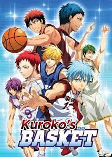
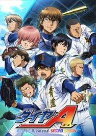
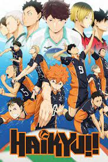
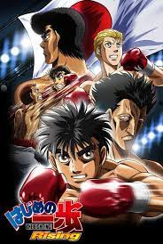

Aoashi tells the story of young Ashito Aoi in his third year at Ehime City Middle School and his meeting with football coach Tatsuya Fukuda. Ashito, although talented, is a difficult boy, but Fukuda believes in him and invites him to join his own team.
Date of release: January 5, 2015
Status : Ongoing
Kuroko

The story follows the Seirin High School basketball team and its members, notably Taiga Kagami and Tetsuya Kuroko. Kuroko is a seemingly invisible player with exceptional passing skills, while Kagami is a talented and ambitious newcomer with remarkable athleticism. Together, they aim to lead Seirin High to victory in the fiercely competitive world of high school basketball in Japan.
Date of release: December 2008
Status : Completed
Ace of Diamond

Eijun Sawamura, the pitcher of a novice junior high baseball team, meets with a bitter walk-off loss. For Sawamura, the loss becomes his last game in junior high, so he sets a new goal of going to the nationals in high school with his teammates.
Date of release: 7 May 2006.
Status : Completed
Haikyuu

The story follows Shoyo Hinata, a high school student who becomes enamored with volleyball after watching a national championship match on television. Despite his short stature, Hinata is determined to become a great volleyball player. He joins Karasuno High School's volleyball team, where he encounters Tobio Kageyama, a talented but arrogant setter.
Date of release: February, 2012
Status : Completed
Hajime No Ippo

The story revolves around the protagonist, Makunouchi Ippo, a shy and timid high school student who is frequently bullied by his classmates. One day, while being beaten up by a group of bullies, he is saved by a professional boxer named Mamoru Takamura. After witnessing Takamura's impressive skills, Ippo expresses a desire to become strong like him.
Date of release: October 11, 1989.
Status : Ongoing